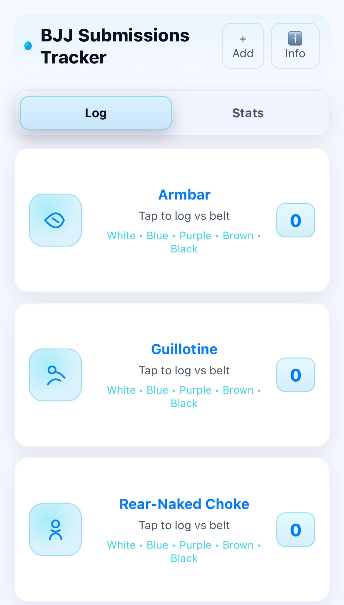

Track what actually works in sparring. Log each submission you land and the opponent’s belt level
(white, blue, purple, brown, black). The app keeps totals and simple breakdowns so you can
see your A-game develop over time. No accounts, no cloud — your data stays on your phone and works offline.

Why grapplers like it
Fast logging — tap a submission, choose belt. Back to rolling.
Your stats, at a glance — totals per move and belt. See which subs you truly hit.
Add your favorites — extend the list with your own submissions anytime.
Offline & private — saved in your browser cache (localStorage) on your device.
Simple by design — we track against belt level, not individual people.